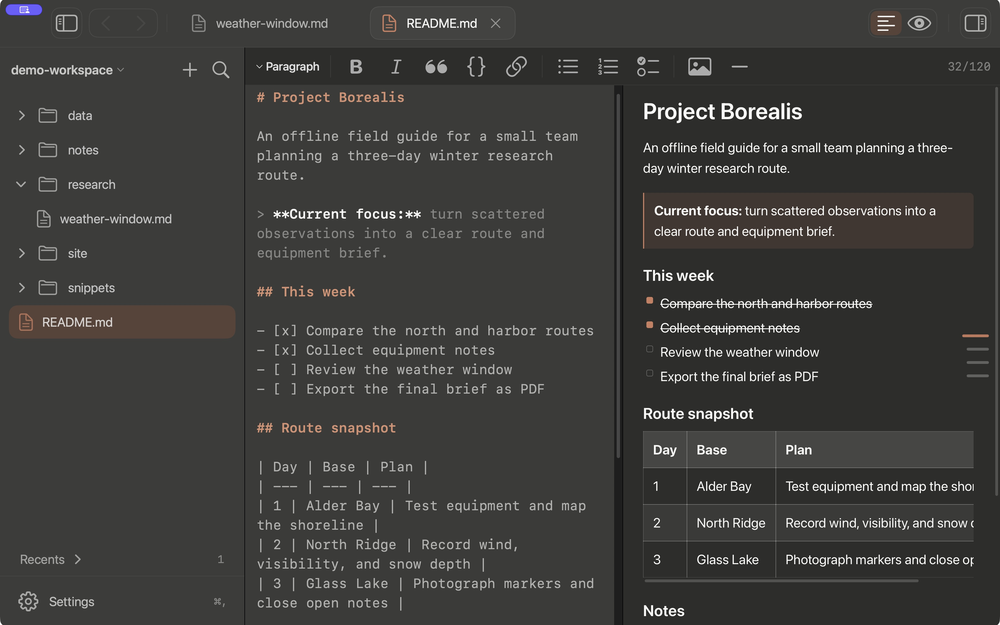

Native workspace for macOS
Markdown, PDFs, and a terminal. One window.
Open a folder. Write, search, mark up PDFs, and run shell sessions beside the work.
Download for macOS
macOS 14+ · Apple silicon and Intel

- Synced Markdown and HTML split views
- Search text files and searchable PDFs
- Scoped Markdown/text replace with batch undo
- PDF highlights, underlines, and drawing
- Markdown export to PDF
- Quick Open, tabs, and outlines
- Daily notes and wikilinks
- Multiple terminal sessions
Appearance
20 light presets. 31 dark.
Choose a preset for each appearance. Adjust the accent, background, foreground, contrast, and UI and code type sizes.
Preview a preset
Featured
Palette preview
Absolutely
Absolutely · Dark palette
- Surface
- #2D2D2B
- Text
- #F9F9F7
- Accent
- #CC7D5E
- Selection
- #59433A
- Added
- #00C853
- Removed
- #FF5F38
- Skill
- #CC7D5E